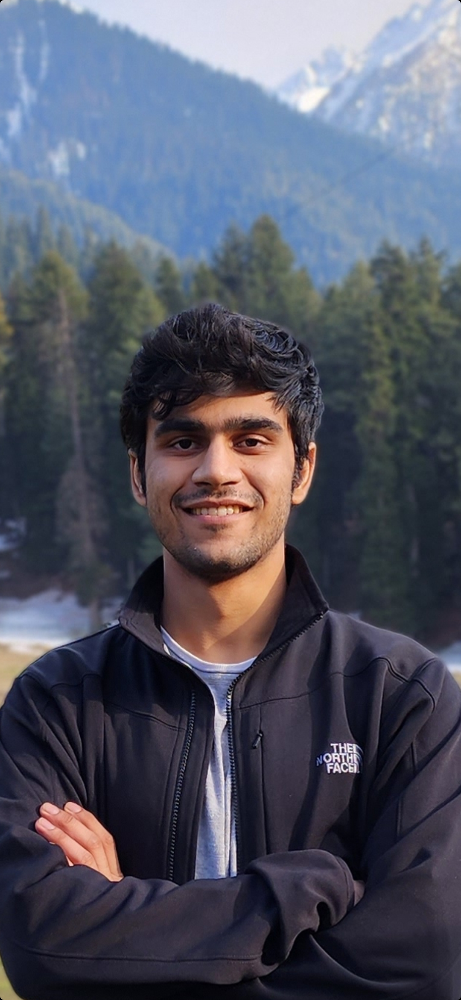

<div class="row flex-column-reverse flex-md-row py-2">
    <div class="col-md-8" id="bio">
        <h1>Nilay Naharas</h1>
        <p>
            I am a graduate student in <a href = "https://www.cs.ucla.edu/"> <u> Computer Science </u> </a> at the <a href = "https://www.ucla.edu/"> <u> University of California, Los Angeles (UCLA) </u> </a>. I am passionate about bridging the gap between cutting-edge machine learning research and its practical application, ensuring that deployed solutions are not only reliable but also secure and impactful.
        </p>
        <p>
            In August 2023, I graduated from the <a href = "https://www.iitjammu.ac.in/"> <u> Indian Institute of Technology Jammu (IIT Jammu) </u> </a> with a B.Tech. in Electrical Engineering with a minor in Computer Science and Engineering. I worked on "Low-light Action Recognition" for my B.Tech. thesis under the guidance of <a href = "https://sites.google.com/view/badrisubudhi/home"><u> Prof. Badri N. Subudhi </u> </a>. I had the privilege of working on the project "Adversarially Robust and Efficient Neural Networks" under the mentorship of <a href = "https://cfaed.tu-dresden.de/pd-staff-kumar> <u> Prof. Akash Kumar </u> </a> at <a href="https://tu-dresden.de/?set_language=en"> <u> TU Dresden </u> </a>, as well as the innovative "Drill Core Analysis" guided by <a href="https://rohitash-chandra.github.io/"> <u> Prof. Rohitash Chandra </u> </a> at the <a href="https://www.unsw.edu.au/"> <u> University of New South Wales Sydney (UNSW) </u> </a>. I spent the summer of 2022 at <a href = "https://www.worldquant.com/"> <u> WorldQuant </u> </a>as a Quantitative Research intern. My experience also includes an internship at <a href ="https://www.se.com/in/en/"> <u> Schneider Electric </u> </a>, where I focused on "Solder Joint Reliability Prediction for Printed Circuit Boards (PCBs)". Prior to these roles, I was an undergraduate researcher at <a href="https://www.ic-resq.com/"> <u> IC-ResQ Lab </u> </a> under the supervision of <a href="https://www.ic-resq.com/people/group-leader"> <u> Dr. Ambika Prasad Shah </u> </a>, where I worked on developing a True Random Number Generator (TRNG) utilizing Quantum Cellular Automata (QCA).
        </p>
        <p>
            My research interests lie in Multimodal Machine Learning, Computer Vision, Reinforcement Learning and Natural Language Processing.
        </p>
        <p style="text-align:center">
<!--             <a target="_blank" href="https://mailhide.io/">Email</a> &nbsp;/&nbsp; -->
            <a href="mailto: nilaynaharas@g.ucla.edu"><u>Email</u></a> &nbsp;/&nbsp;
            <a href="https://drive.google.com/file/d/1OgC8rtLQ36pZKSxHixYmjY2VzlTTqM77/view?usp=sharing"><u>CV</u></a> &nbsp;/&nbsp;
            <a href="https://drive.google.com/file/d/1myMiyT2ZxZOxJdcI6xiL-Yi-QgKVySVl/view?usp=sharing"><u>Resume</u></a> &nbsp;/&nbsp;
            <a href="https://github.com/NilayN7"><u>GitHub</u></a> &nbsp;/&nbsp;
<!--             <a href="https://twitter.com/">Twitter</a> &nbsp;/&nbsp; -->
            <a href="https://scholar.google.com/citations?user=Dtu383sAAAAJ&hl=en"><u>Google Scholar</u></a> &nbsp;/&nbsp; 
            <a href="https://openreview.net/profile?id=~Nilay_Naharas1"><u>OpenReview</u></a> &nbsp;/&nbsp; 
            <a href="https://www.linkedin.com/in/nilay-naharas-5b1a96247/"><u>LinkedIn </u></a>
        </p>
    </div>
    <div class="col-md-4" style="z-index:4;">
        
    </div>
</div>

{% include projects.html %} 
{% include publications.html %} 

